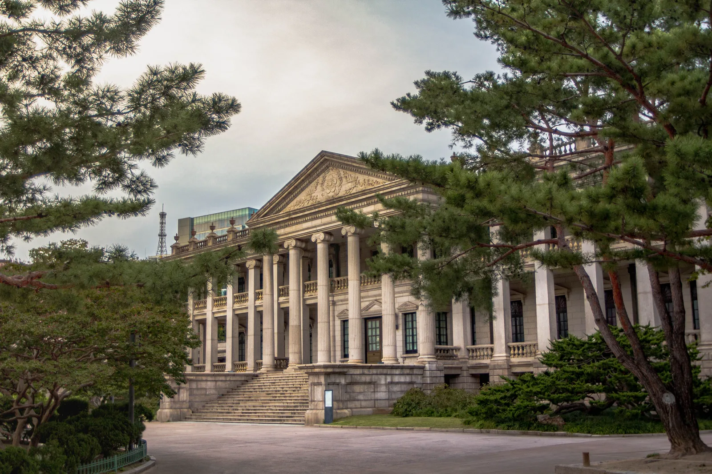
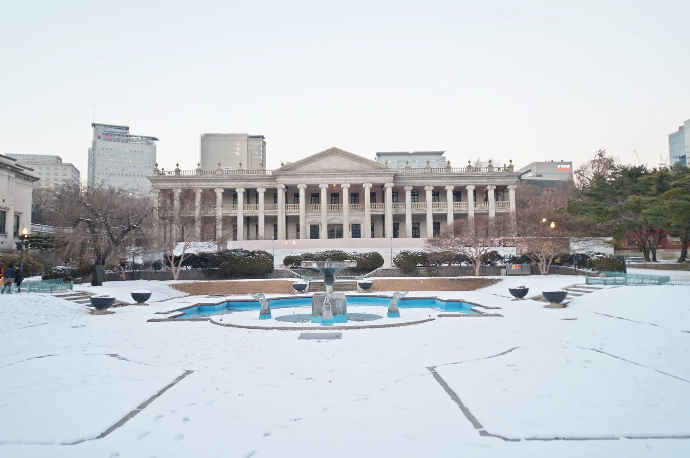

▲ 야간 조명을 받은 덕수궁 석조전. 하반기 '밤의 석조전' 프로그램은 9월 9일부터 10월 18일까지 진행된다 ⓒ Wikimedia Commons (CC BY-SA 4.0)
덕수궁 석조전의 밤을 보는 방법은 딱 하나, '밤의 석조전' 프로그램뿐이다. 대한제국 황실의 서양식 건물이었던 석조전 내부를 해설사와 함께 둘러보고, 2층 테라스에서 가배(커피)나 오미자차와 디저트를 즐긴 뒤 대한제국 황실 이야기를 담은 창작 미니 뮤지컬까지 보는 프리미엄 체험이다. 1인 3만 5,000원, 회당 16~18명이라는 좁은 정원 때문에 추첨 응모로 진행되는데, 2026년 하반기(9월 9일~10월 18일) 응모는 8월 19일 오후 2시부터 25일 밤 11시 59분까지였고 이미 마감됐다. 하지만 당첨자가 결제하지 않아 남은 좌석이 9월 2일 오후 2시부터 잔여석 선착순 예매로 풀렸고, 이 글을 쓰는 지금도 티켓링크에서 예매를 시도해볼 수 있다.

▲ 낮에 본 덕수궁 석조전. 그리스 신전을 연상시키는 열주(列柱)가 특징인 대한제국 황실의 서양식 건물이다 ⓒ Wikimedia Commons (CC BY-SA 4.0)
1. 3만 5,000원짜리 90분 — 무엇을 하는 프로그램인가

▲ 석조전 서쪽 측면. 밤의 석조전 프로그램은 이 건물 내부와 2층 테라스를 모두 이용한다 ⓒ Wikimedia Commons
밤의 석조전은 경복궁 별빛야행처럼 궁궐 전체를 걷는 프로그램이 아니라, 석조전 한 건물 안에서 진행되는 실내 체험형 프로그램이다. 해설사를 따라 석조전 내부 전시실을 둘러본 뒤, 2층 테라스에서 대한제국 황실 스타일의 가배(커피)나 오미자차와 디저트를 맛보고, 대한제국 황실 이야기를 소재로 한 창작 미니 뮤지컬을 감상하는 순서로 약 90분간 진행된다. 회차당 정원이 16~18명으로 매우 좁아, 하루 3회차를 다 합쳐도 48~54명 남짓만 입장할 수 있다. 실내 프로그램인 만큼 실내용 슬리퍼를 준비해야 하고, 예매자 본인의 신분증(주민등록증·운전면허증·모바일신분증)도 지참해야 한다.
2. 잔여석 구하는 법 — 예매 타임라인

▲ 덕수궁 돌담길. 잔여석 예매는 이 돌담 안쪽 석조전에서 열리는 회차를 대상으로 진행된다 ⓒ Wikimedia Commons (CC BY-SA 4.0)
2026년 하반기 밤의 석조전은 추첨제로 운영된다. 8월 19일 오후 2시부터 25일 밤 11시 59분까지 티켓링크에서 응모를 받았고, 8월 27일 오후 5시에 당첨자를 발표한 뒤 28~31일 나흘간 당첨자 우선 예매(1인 최대 2매)가 진행됐다. 여기까지는 이미 끝난 절차다. 관건은 그다음이다. 당첨됐지만 결제하지 않은 좌석은 9월 2일 오후 2시부터 잔여석 선착순 예매로 전환됐고, 만 65세 이상·장애인·국가유공자 등 우대 대상자를 위한 전화 예매도 같은 시각 시작됐다. 잔여석 예매는 티켓링크 사이트에서 날짜·회차를 선택해 진행하며, 인기 회차(주말 저녁)는 이미 마감됐을 수 있지만 평일 회차나 행사 막바지 날짜는 여유가 있는 경우가 많다.
티켓링크에서 잔여석 확인 가능3. 주차는 아예 포기하자 — 덕수궁엔 주차장이 없다
▲ 야간 조명이 들어온 석조전 정면. 도심 한복판에 있지만 방문객용 주차장은 운영하지 않는다 ⓒ Wikimedia Commons (CC BY-SA 4.0)
경복궁이나 창경궁은 시간제 요금이라도 부설 주차장을 이용할 수 있지만, 덕수궁은 방문객용 주차 시설 자체가 없다. 국가유산진흥원도 공식 안내에서 "덕수궁은 주차 이용이 불가능합니다. 대중교통 이용 바랍니다"라고 명시하고 있다. 가장 가까운 지하철역은 1·2호선 시청역으로, 12번 출구로 나오면 덕수궁 대한문까지 도보로 몇 분이면 닿는다. 인근에는 서울시립미술관 주차장 등 사설 유료 주차장이 있지만 요금 편차가 크고 주말·저녁 시간대 만차 가능성이 높으므로, 애초에 지하철로 이동하는 편이 가장 확실하다.
4. 정리
체크포인트
- 추첨 응모는 2026년 8월 25일에 이미 마감됐다. 다음 기회는 상반기 응모(통상 3월)를 노려야 한다.
- 9월 2일 오후 2시부터 열린 잔여석 선착순 예매는 여전히 진행 중일 가능성이 높다. 정확한 마감 시점은 티켓링크에서 재확인이 필요하다.
- 가격은 1인 3만 5,000원, 회당 16~18명, 소요 시간 약 90분이다.
- 덕수궁에는 주차장이 없다. 시청역 지하철 이용이 사실상 유일한 선택지다.
예매는 티켓링크(ticketlink.co.kr)에서, 프로그램 문의는 국가유산진흥원 궁능 활용 프로그램(☎ 1522-2295)이다.